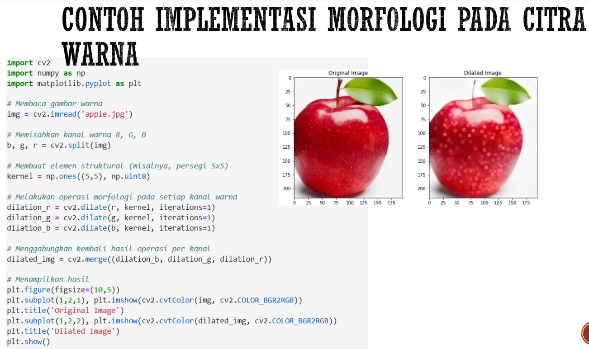

Pertemuan 9: MORFOLOGI CITRA
Materi ini membahas Morfologi Citra dalam Pengolahan Citra Digital
Sub-Topik:
- Morfologi Citra
- Operasi Morfologi Pada Citra Biner
- Operasi Morfologi Pada Citra Warna
Morfologi Citra
Morfologi citra adalah teknik pengolahan citra yang menggunakan struktur bentuk dan geometri objek untuk melakukan operasi pada citra biner atau grayscale. Digunakan dalam segmentasi citra, pengenalan objek, pengurangan noise, ekstraksi bentuk, dan analisis tekstur.
Operasi Morfologi Pada Citra Biner
Citra biner adalah citra yang hanya memiliki dua nilai piksel: 0 (hitam) dan 255 (putih). Operasi morfologi pada citra biner banyak digunakan karena lebih sederhana dan efektif dalam mendeteksi bentuk dan struktur dasar objek dalam citra.
Operasi Dasar Pada Citra Biner
- Dilasi (Dilation): Dilasi memperluas area objek putih dalam citra biner. Setiap piksel putih akan "mendorong" bentuknya ke arah piksel hitam di sekitarnya. Berguna untuk memperbesar atau menghubungkan area-area objek yang berdekatan. Contohnya pada citra biner dengan objek lingkaran kecil, operasi dilasi akan memperbesar lingkaran tersebut.
- Erosi (Erosion): Erosi menghilangkan piksel putih dari tepi objek, memperkecil area objek. Cocok untuk mengurangi noise atau memisahkan objek yang saling menempel. Contohnya pada citra dengan objek berbentuk persegi kecil, operasi erosi akan mengurangi ukuran persegi tersebut.
- Opening: Kombinasi dari erosi diikuti dengan dilasi. Sering digunakan untuk menghilangkan noise kecil sambil mempertahankan bentuk utama objek. Contohnya pada citra dengan titik-titik kecil sebagai noise, operasi opening akan menghilangkan titik-titik tersebut.
- Closing: Kombinasi dari dilasi diikuti dengan erosi. Digunakan untuk menutup lubang-lubang kecil atau celah di dalam objek. Pada citra dengan lingkaran berlubang, closing dapat menutup lubang tersebut sehingga menjadi objek penuh.
Contoh Penerapannya Pada Python

Gambar 9.1: Kode Python & output Implementasi Operasi Morfologi Citra Biner
Operasi Morfologi Pada Citra Warna
Pada citra warna, operasi morfologi lebih kompleks dibandingkan citra biner karena setiap piksel memiliki nilai intensitas untuk setiap kanal warna (biasanya RGB - Merah, Hijau, dan Biru). Untuk itu, teknik morfologi pada citra warna biasanya diterapkan pada setiap kanal warna secara terpisah atau dengan pendekatan khusus pada keseluruhan citra.
Operasi dasar morfologi seperti dilasi, erosi, opening, dan closing dapat dilakukan pada citra warna, baik dengan metode per-kanal atau dengan konversi ke grayscale. Berikut ini adalah contoh penggunaan operasi morfologi pada citra warna menggunakan pendekatan per-kanal RGB.
Pendekatan Operasi Morfologi Pada Citra Warna
- Operasi per-Kanal: Dilakukan dengan memisahkan citra warna menjadi tiga kanal (R, G, B) dan menerapkan operasi morfologi pada masing-masing kanal. Setelah operasi, ketiga kanal akan digabungkan kembali untuk membentuk citra akhir.
- Pendekatan Grayscale atau Nilai Intensitas: Mengonversi citra warna ke dalam skala abu-abu (grayscale) atau menggunakan kanal intensitas dalam model warna HSI (Hue, Saturation, Intensity). Operasi morfologi diterapkan pada hasil grayscale atau kanal intensitas, dan perubahan tersebut akan diterapkan kembali pada citra warna asli.
Contoh Penerapannya Pada Python
Gambar 6.4: Kode & Output Python Implementasi Morfologi Pada Warna